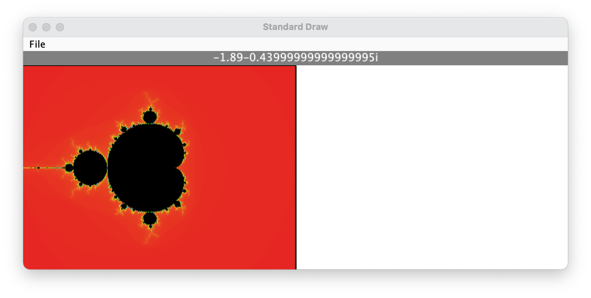
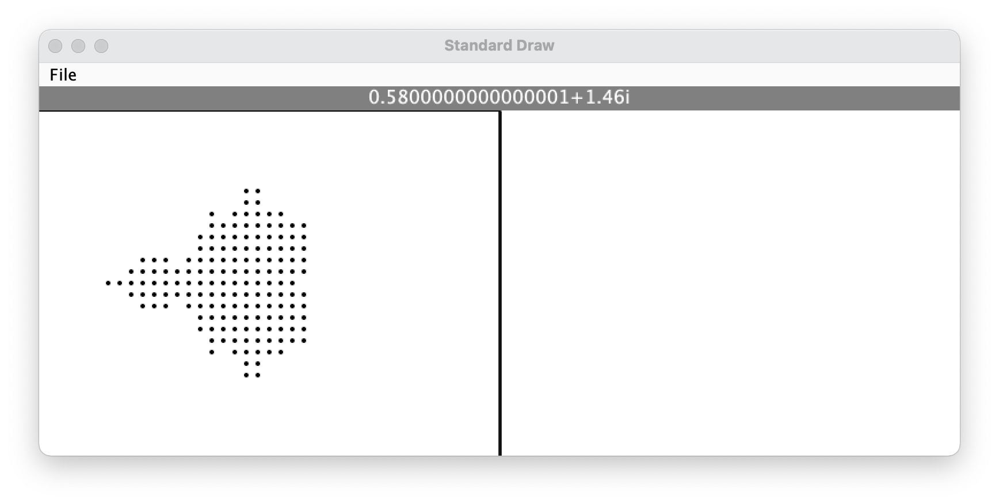
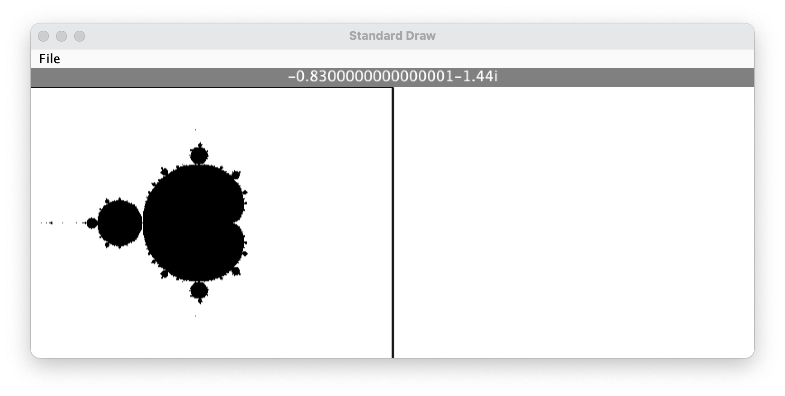

Milestone 3: Generate the Mandelbrot set.
Milestone Goals

The Mandelbrot algorithm
The same recursive formula can be used to generate both the Mandelbrot and Julia sets:
Zn = Zn-12+C
To generate the Mandelbrot set, every point in the Complex plane is successively used as C in this equation. We also start with Z0 = 0 + 0i. The recursive formula will then produce a sequence of terms: Z1, Z2, Z3, Z4, Z5, Z6,...
This sequence of terms is either unbounded or bounded:
- unbounded - C is not part of the Mandelbrot Set. Any Zn with magnitude > 2 indicates a sequence that is unbounded. Once a Zn with magnitude > 2 is found, the recursion should end.
- bounded - C is part of the Mandelbrot Set. Consider C part of the Mandelbrot set after considering 360 terms without finding a Zn with magnitude > 2.
To generate a black & white version of the Mandelbrot set, select a fill color based on whether the point C produces a bounded or unbounded sequence.
Implementation Tips
You should tackle the generation of the Mandelbrot set in stages:
- Generate a low resolution black & white Mandelbrot set.
- Generate a high resolution black & white Mandelbrot set.
- Generate a high resolution Mandelbrot set using a minimum of 10 colors.
Generating a low-resolution black & white Mandelbrot set
Every point C in the Complex plane will be used to generate a recursive sequence of up to 360 terms. A first goal of generating a low resolution black & white Mandelbrot set will help ensure that you don't waste time sitting around waiting for unnecessary or inaccurate calculations.

The real axis has a range of -2 < a < 2. Start with a step size of 0.1 between points to reduce the total number of points you need to consider.
Generating a high-resolution black & white Mandelbrot set
Once you have correctly generated the above photo, decrease your step size to increase the resolution of your image.

This is a good opportunity to implement getStepSize() in DisplayWindow as there is an upper limit to the number of points you should consider based upon the size of the canvas.
Color Tips
As you consider each point C in the Complex plane, every new C will fall into one of the following categories:
- C is part of the Mandelbrot set and should be black
- C is not part of the Mandelbrot set should be some other color. Assign a different color to C according to the number of terms in the sequence you considered before ending the recursion.
Experiment with different coloring schemes as there isn't a uniform distribution of the number of terms considered before the recursion ends. HSB is an easier color space to work with than RGB for this project:
import java.awt.Color;
class JuliaSetGenerator{
...
Color.getHSBColor(h,s,b) //check documentation to see how to use h, s, and b
...
}
Don't forget to use double buffering!
Double buffering will significantly speed up the rendering process. If you don't use buffering your animation will be extremely slow. This might be obvious now, but it will be very evident once we start zooming in and out.
Milestone 3 Checklist
To complete this milestone, your project should:
- Generate a high resolution Mandelbrot set using at least 10 colors
- Use double buffering to generate the Mandelbrot set no lag
- Determine whether C produces a bounded sequence by using a recursive method that does not refer to any global variables